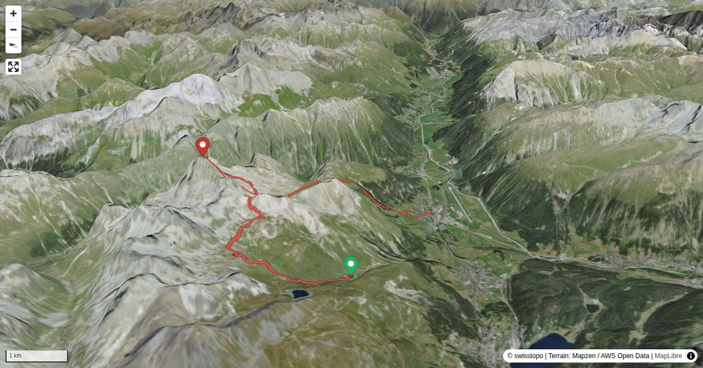

Piz Ot has a well-kept, but exposed trail up to the summit. If you use the cableways, the trip can be shortened considerably. However, it is more rewarding to spend some time on the longer routes in the fascinating landscape.
Attention: The chairlift to Trais Fluors no longer runs in summer (as of 2021), special trips are possible.
Quick Facts
| Summit elevation | 3246 m |
|---|---|
| Difficulty | SAC T4+ Check the route notes below for terrain and commitment level. Guide |
| Trailhead | Marguns, summit station |
| Distance | 12.7 km (out-and-back) |
| Total ascent | ~1071 m |
| Elevation range | 1705-3246 m |
| Route sources | SAC Route Portal |
Photos


Route Map & Elevation
i
i
sac_scale (precise T1–T6) with
swissTLM3D Wanderwegart
fallback where OSM is silent (coarser T2/T3 and T4+ buckets).
Coverage: OSM 71.2% · swisstopo 20.2% · unknown 0.0%.Elevations computed from the inlined GPX track (SwissTopo height API).
Loading forecast…
3D Terrain View

Route Details
On the south-east face
- TODO: Step 1 description.
- TODO: Step 2 description.
Terrain & safety
The entire trail to the summit is marked. Steep passages are equipped with chains and railings. Nevertheless, surefootedness and a head for heights are required. In unfavourable conditions (snow, ice, wet terrain) the itinerary is very precarious.
Source: SAC Route Portal
Getting There & Back
Start: Marguns, summit station (2271 m)
Directions from to Marguns, summit station
End: Samedan, train station (1705 m)
Directions from Samedan, train station back to
Field Reference
| Trailhead | Marguns, summit station | 46.51650, 9.82530 |
|---|---|---|
| Summit | Piz Ot Samedan (3246 m) | 46.54321, 9.81022 |
Coordinates are WGS84 decimal degrees (lat, lon). Emergency: 112 (general) or 1414 (Rega air rescue). Page URL: